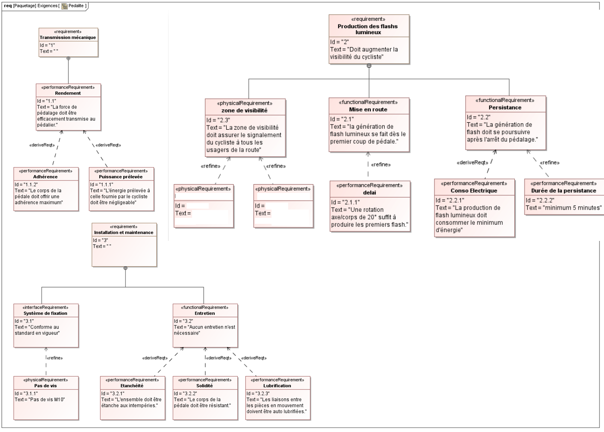
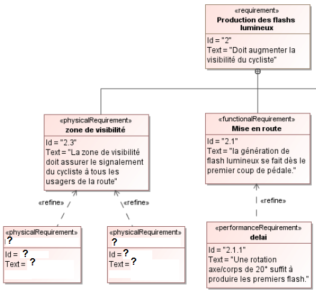

EXIGENCES
Le diagramme ci dessous recueille l'essentiel des exigences de la pédale lumineuse KPL200.

Ce diagramme des exigences ne fait pas mention de l'angle et de la distance de visibilité des flash lumineux précisés dans le dossier technique.
- A quelle exigence générale, ces deux valeurs se rattachent t-elle ?
- A partir des informations fournies dans le dossier technique, complétez le diagramme des exigences du document réponse, en remplaçant les "?"

- En utilisant le logiciel "Magic Draw", dessiner le diagramme obtenu (à partir du bloc" zone de visibilité") ;imprimer le résultat; vous pourrez utiliser l'aide du chapitre "Ressouces Magic Draw" (cliquer)
- Les éclatés de la pédale lumineuse (Principe de fonctionnement) font apparaître 1 joint entre l'axe (1) et le corps de la pédale. A quelle exigence, ce joint répond t-il ?
Created with the Personal Edition of HelpNDoc: Easily create iPhone documentation